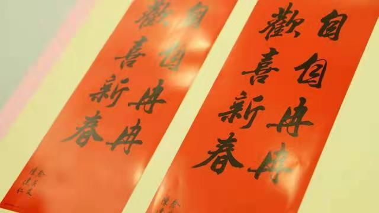
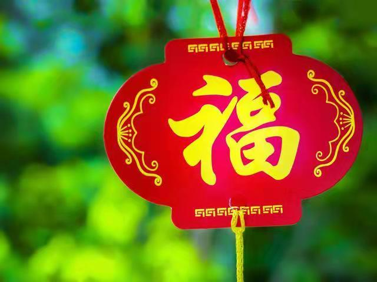
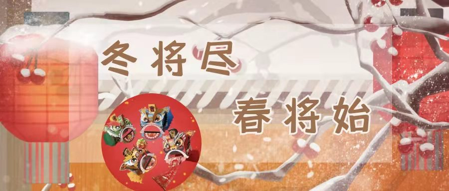

—有百样年味
一般来说，门联会有两幅直联一幅横联，直联的其中一幅如果最后一字是仄声字（国字注音第三、四声），就是上联，平声（注音第一、二声）为下联，且要记得是从面对大门的右边贴到左边，而若上下联的最后一字平仄声相同时，则要根据意义来来辨别。
古代时，只有怡红院等声色场所才会在门口贴「春」，因此居家大门口也建议不要贴「春」以免招来烂桃花，可以改贴「福」或是「招财进宝」。
由于「到」与「倒」同音，在古礼也是同义字，因此将春联倒过来贴，有着「财到」、「福到」等意思，但大门口是进出的空间，如果倒贴春联会有种把福气、钱财倒光光的意思，因此建议窗上、米缸等地方再使用倒贴手法。
大家都知道红包要包双数才吉利，但春联则是相反，据信单数1、3、5为阳，偶数2、4、6为阴，因此在大门口贴春联时，记得贴象征吉祥的单数，若是不小心贴到偶数，可能就会容易招阴，不过，屋内的春联则不受此限制。
从农历腊月二十三（北方）或二十四（南方）送神开始，有空就要打扫，最好是在大扫除完成后再开始贴春联，而贴春联的时间最好是「除夕的早上6点到中午12点间」，因为这段时间阳气最旺。
有些人贪图方便，会将新春联贴在旧春联上，想说看不到就没事了，事实上必须把就春联撕下来并撕破后，再把新春联贴上去，才能真正象征除旧布新，为新的一年带来好运气。
想要喜庆一些的，银柳是最合适的，来自谐音“留银”，有聚财的意思，银柳是染色的，也是常见的年宵花，现在银柳有很多种新年造型。
各种各样的小雏菊，小雏菊大概是花期最长的鲜切花之一了。三天一换水一剪根；小雏菊要想养的时间长，花瓶一定要少放水，花瓶放水5cm即可，放多了泡水的枝条容易腐烂，到最后可能花开的好好的，但是枝条剪没了。
满天星蓝色、白色、粉色比较常见，正红色相对来说少见一些，不过正红色和过年的气氛很契合。满天星可以晒成干花一直放着，或者直接购买满天星的干花会更便宜一些。
价格最低，花期最长的是银柳和迎客豆：银柳代表财运滚滚，是每年新年必备花材之一；迎客豆喜庆的颜色、长久的花期，是今年的黑马花材。这两种花材都是染色花材，颜色多种多样，也都可以做干花，干花形态和鲜花时是一样的，花期一年以上。
一些网友的插花攻略